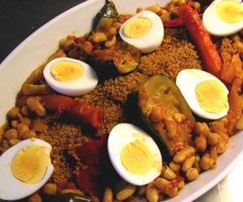

Vegetarian Tunisian Couscous
5,5 von 6Couscous
Sauce: Soak 300 gr chick peas and 200 gr broad beans over night. Sautee on over medium fire 5 cloves of minced garlic and 2 minced onions with 1/2 cup olive oil, until soft. Add 2 tbs harissa, 1 tbs ground cumin, 1/2 tbs ground coriander seed, 1 tbs salt, and 300 gr tomato paste, until paste forms. Add chick peas and broad beans, 4 cored, green, hot peppers and 4 cored mild, red peppers. Add 5 large peeled carrots and 4 tomatoes. Heat over medium fire in 3 liters of water (here you begin preparing the grain), until peas are soft (about 2 hours) add 4 cut zucchini during last 20 minutes. Boil 5 eggs, for decoration.
Grain: Place 500 gr couscous grain in a bowl and rub with 3 tbs olive oil and 3 tbs cinnamon. Then add 1 cup of sauce (recipe above). Cover sides of a colander with tinfoil, place colander over sauce. Add a handful of grain, when vapour begins rising add the rest of the grain, and leave for ten minutes. Place in bowl and rub with a bit more oil and another cup of sauce. Return to the colander as before, for an additional 15 minutes.
Serve sauce over grain.
